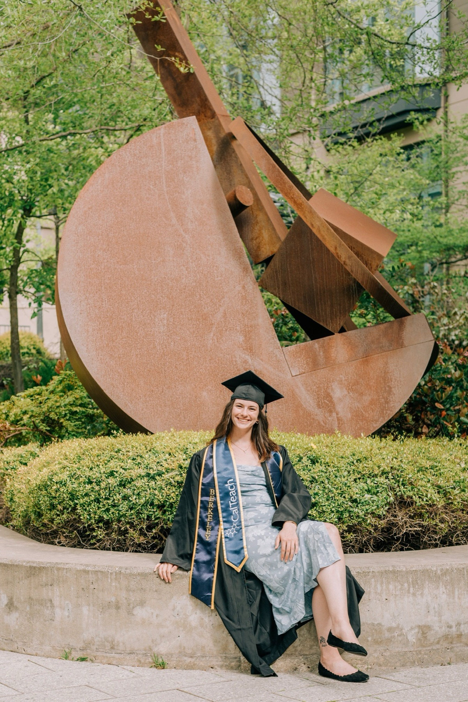

Get to know me
About me
A Berkeley grad, lifelong learner, and problem-solver who found her way from restaurant kitchens to cloud infrastructure. She loves every bit of the journey.

From smoke-filled kitchens to cloud-based systems, I thrive in fast-paced environments where complex problems meet creative solutions. With a background that spans restaurant leadership, technical support, software engineering, and mentoring aspiring coders, I bring a unique blend of hands-on grit, technical expertise, and a passion for continuous learning.
I'm driven by a love for problem-solving and cracking tough technical challenges while also helping teams grow through curiosity and collaboration. Armed with a Computer Science degree and STEM Education minor from UC Berkeley, I'm excited to connect, create, and contribute to projects and teams that value innovation and growth as much as I do.
Thanks for stopping by! If you're inspired or just want to chat, let's connect. I'm always eager to collaborate and tackle new challenges!
Where I've contributed
Professional experience
A mix of support engineering, technical teaching, and leadership roles where I solved problems, improved systems, and helped people grow.
Senior Support Engineer
Sourcegraph • San Francisco, CA (Remote)
October 2025 – Present
- Engineer and support large-scale Sourcegraph deployments, enabling developers to search, understand, and automate code across complex environments.
- Deliver reliable, high-performance deployments across both cloud and on-premise architectures, with a focus on stability, scalability, and customer success.
- Partner closely with engineering teams to streamline CI/CD pipelines and improve the speed and consistency of deployment workflows.
Senior Code Coach
The Coder School Berkeley • Berkeley, CA (Remote)
August 2019 – Present
- Mentored 100+ students ages 8–18 in 1:1 sessions and group classes, building coding skills and confidence through tailored instruction.
- Taught 5+ programming languages (Python, JavaScript/HTML, Lua) while adapting to diverse learning styles and maximizing engagement.
- Guided students to secure first-place awards in local coding challenges and recognition in national competitions.
- Spearheaded curriculum improvements and operational enhancements while mentoring newly onboarded coaches.
Support Engineer 2
Atlassian • Sydney, Australia (Remote)
July 2023 – Aug 2025
- Delivered technical support for Atlassian products, managing 5+ tickets daily and achieving a 3.6 average daily closure rate across diverse customer use cases.
- Effectively resolved customer issues with SAML and SCIM integrations, user and group management, and security settings, achieving 90.4 NPS.
- Utilized REST APIs to streamline workflows, reducing average handling time to 36 minutes per request.
- Led 4+ synchronous and asynchronous team events, enhancing collaboration among colleagues across the US, Brazil, and Mexico.
Software Development Intern
Technology Enhanced Learning in Science • UC Berkeley, CA
October 2022 – May 2023
- Selected by faculty to join a graduate-level course and research lab improving online learning outcomes.
- Collaborated with graduate candidates to analyze and label student response data for AI/NLP model training.
- Contributed to feature improvements on the WISE (Web-based Inquiry Science Environment) platform.
- Programmed in Java, HTML, and TypeScript using the Angular framework.
Food Service Supervisor
Good Smoke BBQ • Rochester, NY
April 2015 – June 2021
- Adapted quickly to fast-paced environment, building knowledge of restaurant operations while maintaining high service standards.
- Cross-trained in 5+ roles (server, catering, line cook), demonstrating flexibility and commitment to growth and excellence.
- Directed onboarding for 30+ team members, ensuring alignment with service standards and organizational values.
- Configured and maintained social media, networks, and POS systems across 3 locations, ensuring minimal downtime and operational efficiency.
Where I've grown
Education
University of California, Berkeley
Bachelor of Arts in Computer Science
August 2019 – May 2023
- Minor in STEM Education through Cal Teach.
- Combined technical coursework with teaching and communication-focused training.
Webster Schroeder High School
Diploma
August 2015 – May 2019
- Graduated Summa Cum Laude.
- Co-founded and led the Computer Science League.
- Served as captain of the Girls Varsity Swim Team.
What I bring
Skills
Languages
Frameworks, Protocols & Systems
Tools
Strengths
Ready to work together?
Whether you need a tutor, a photographer, or a tech consultant, I'd love to hear what you're working on.